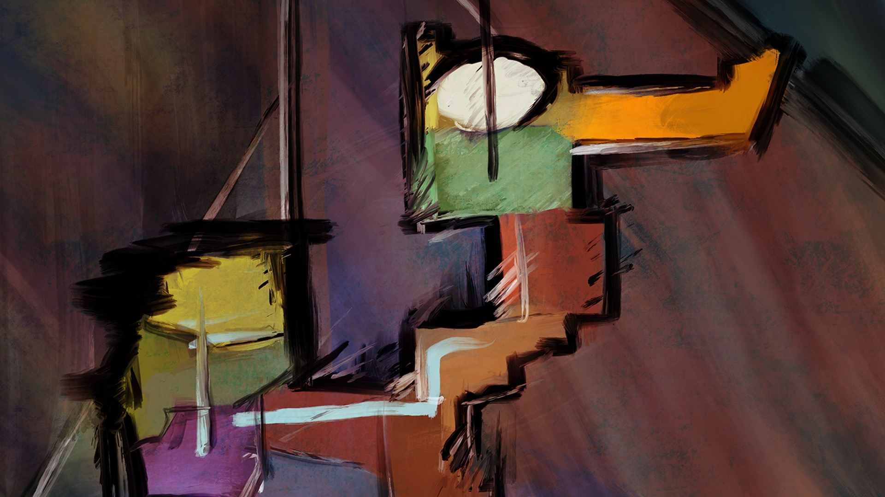
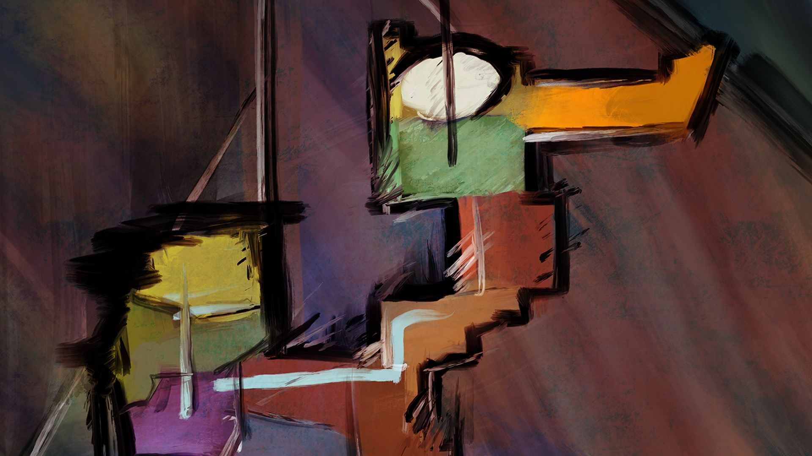

Mapping Ukraine
Art of the Gerrymander
Character Animation

Honda Days
Experienced graphic and video artist with a focus on data visualization and narrative animation. As a Peabody Award-winning multidisciplinary designer in news media, I’ve created charts, maps, graphics, correspondence, and provided editorial review for video journalism that’s illuminated political and social commentary worldwide.
Mapping Ukraine
Art of the Gerrymander
Character Animation
Honda Days